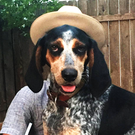

Jonathan Furr
Home
Experience

Hello, I’m Jonathan.
My home is Los Angeles, California.
Experience - Development
El Famoso | September 2017 - Present
ProSearch Strategies | May 2017 - November 2017
Blackbaud | February 2016 - March 2017
Experience - Music
T Bird and the Breaks | 2006 - 2015
Natch L. Boogie Records | 2006 - 2015